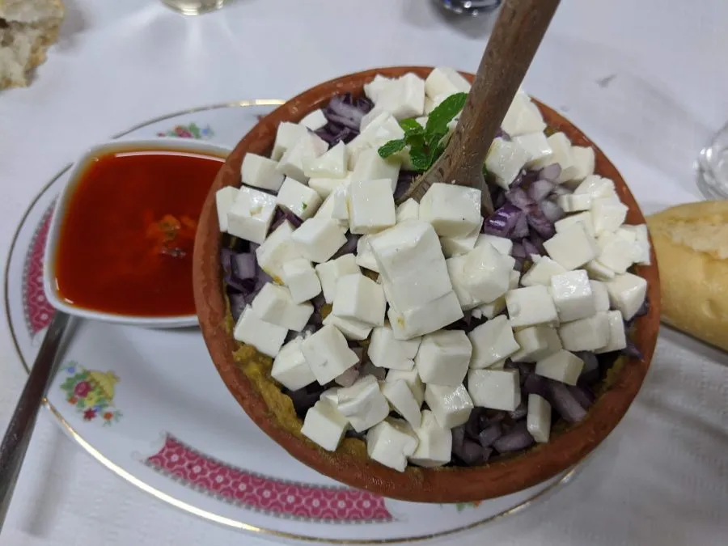

Escaldón

Escaldón by Patricia Rojas
Description
Escaldón is a traditional meal from the Canary Islads. Usually served along with dry fruits and palm honey
Ingredients
- 250g Gofio (rosted meal)
- Fish Broth, Vegetables Broth or Meat Broth
- 1 red onion
- fresh cheese
Steps
- Warm the broth
- Put the gofio on a bowl and add broth until it gets homogen and sticky
- Add the meat from the Grilled Ribs
- Add chopped onion to your preference
- Add some cheese dices
- Serve with Spicy or green Mojo